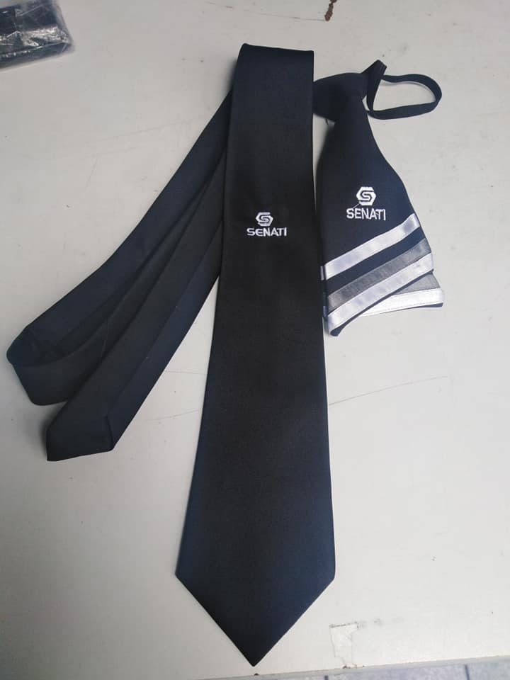
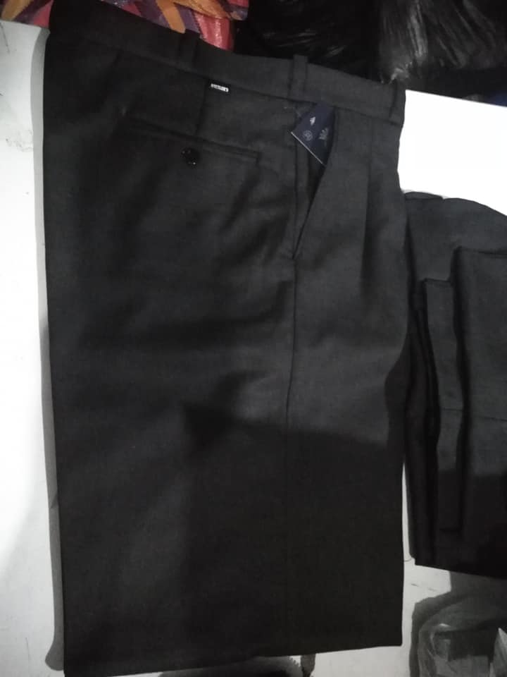

Clima del Día: Día Templado Senatino




Hoy se presenta un día templado en SENATI. Para mantener la formalidad y el profesionalismo, te recomendamos usar el uniforme completo: saco azul institucional, camisa blanca, corbata institucional, pantalón de vestir oscuro y zapatos formales negros. Esta vestimenta te permitirá estar cómodo durante tus actividades académicas.
Recomendaciones para este día:
- El clima es variable, considera llevar un paraguas ligero por si hay lluvias ocasionales.
- La temperatura es moderada, el saco institucional será suficiente para mantenerte confortable.
- Mantén tu uniforme en buen estado y limpio, refleja la excelencia SENATI.
- Protege tus ojos con lentes de sol si el sol está fuerte durante el día.
- Lleva contigo una botella de agua para mantenerte hidratado.